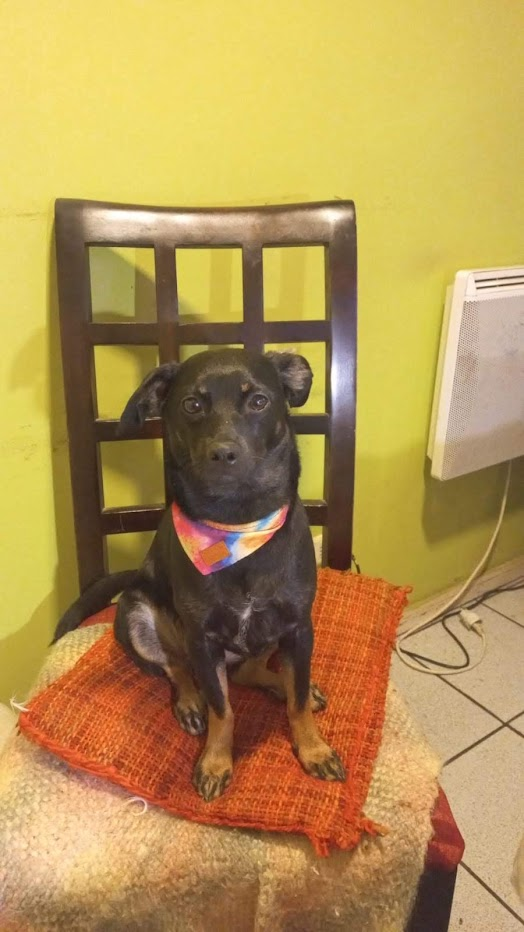

Antonia Alvear
Antonia es diseñadora e ilustradora chilena. Su práctica se mueve entre el diseño de productos, la creación de objetos, la ilustración y la experimentación visual, adaptándose a distintos formatos y escalas. Tiene un fuerte interés por la experimentación y por el aprendizaje que surge a través de los procesos de diseño, explorando distintas formas de observar, interpretar y dar valor a lo cotidiano.
Uno de los pilares de su trabajo es Yapoanto, un universo visual que nace del valor del cotidiano. A través de personajes, objetos e imágenes, busca observar y reinterpretar situaciones, objetos, espacios y experiencias que forman parte de nuestras rutinas, explorando cómo estos pueden adquirir nuevos significados y generar vínculos con quienes los habitan.
Yapoanto es una invitación a detenerse, observar y encontrar belleza en aquello que ya nos rodea; a rescatar la calidez y ternura de las pequeñas cosas, reconectar con lo esencial y redescubrir la magia de lo cotidiano. A recordar que, incluso en medio de la rutina, seguimos siendo seres explorando este mundo por primera vez.
Áreas de Práctica
- Área 1
- Área 2
- Área 3
- Área 4
Colaboraciones
Disponible para comisiones ilustradas, proyectos de diseño independiente y colaboraciones creativas.
contáctame :)